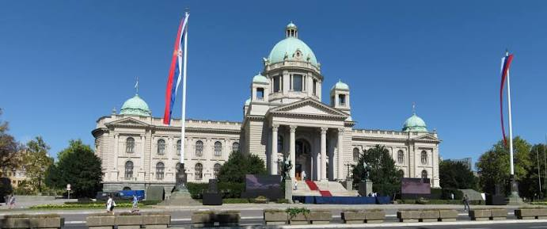
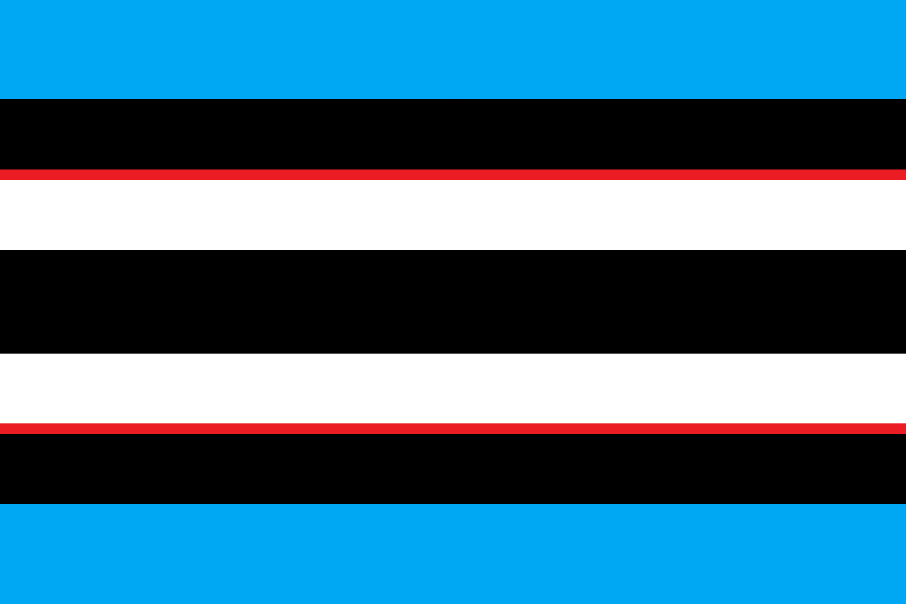
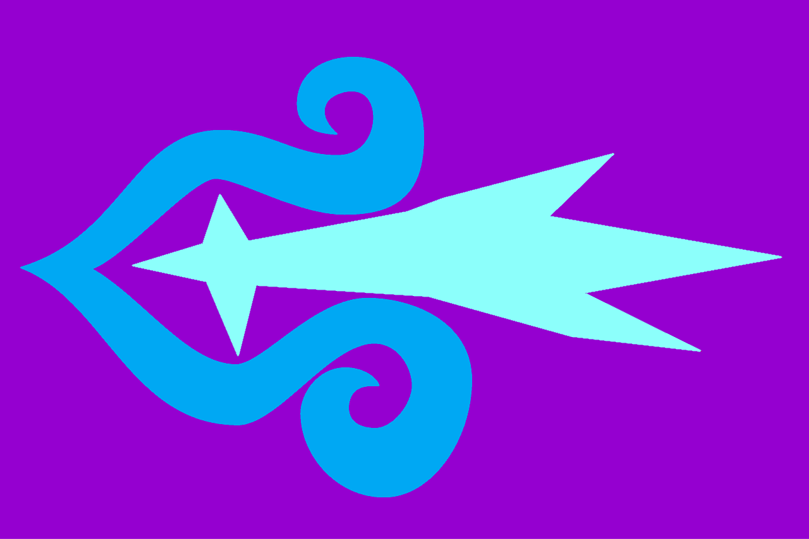

| Neil's Secret Invasion of Yugoslavia | |
|---|---|
|

National Assembly of Serbia during the invasion. No visible combat because it's a secret invasion.
|
|
| Date | 27 July – 21 August 2021 (3 weeks and 4 days) |
| Location | Yugoslavia |
| Result |
Neil Victory
|
| Territorial changes | Yugoslavia now under full control of Neil Divins |
| Belligerents | |

Uited Balkan Front
 Neil's Secret Army
|
|
| Commanders and leaders | |
|
Aleksandar Vučić
Nataša Pirc Musar
Stevo Pendarovski
Milo Đukanović
Christian Schmidt
Zoran Milanović
 Cameron Impostor
Cameron's Defense Bloc
Neil Divins
Neil's Secret Army
|
|
| Units involved | |
|
JNA
Cameron's Defense Bloc
Yugoslav Rebels
Neil's Secret Army
|
|
| Strength | |
|
22,300 personnel
35,200 soldiers
10,000 policemen
|
|
| Casualties and losses | |
|
244 killed
1,436 wounded
45,693 captured
1 killed
12 wounded
|
|
|
291 foreign civilians killed
|
|
Neil's Secret Invasion of Yugoslavia was a brief armed conflict that resulted in the near total reformation of Yugoslavia. It was fought between the separatists of Neil's Secret Army and the Yugoslav People's Army (or JNA) with aid from the CDB. It lasted from 27 July 2021 until 21 August 2021, with the signing of the Huntingdon Treaties.
It was the first of the wars in Yugoslavia, followed by the Cameron's protection of Croatia in the Croatian War, and by far the shortest of the conflicts with fewest overall casualties. The war was brief because the JNA, dominated by Serbo-Montenegrins, was taken by surprise and forced to retreat to defend Croatia, the last line of defense between Neil Divins and domination of the Balkan Sea. Croatia was also prioritized as it was considered "Fucking Awesome" and therefore of more interest to the reformed JNA.
Following the COVID-19 Pandemic, Neil Divins thought it would be funny to reform Yugoslavia. Little of what happened during the invasion is known, but rumors say that Neil was able to harness the power of abstinence to make his army invisible to those who get bitches. All nations southeast of Croatia fell immediately due to a string of strategic assassinations by the NSA, leaving many Balkan leaders no time to react. The JNA was quickly reformed to create a united Balkan front to combat Neil, however they were quickly routed to defend Croatia. Macedonia was the first to fall, followed by a seemingly instant takeover of the rest of Yugoslavia.
Neil was able to unify the Yugoslav people through uniting both the gamers and the liberals. This allowed Neil to quicly gather a secret police to quell any immediate rebellion.
Following the signing of the Huntingdon Treaties on 21 August 2021, Neil Divins consolidated his control over the former Yugoslav states, formally reforming Yugoslavia under a centralized dictatorship. The JNA was dissolved and replaced by Neil's Secret Police as the nation's primary military force. Neil would go on to launch further campaigns in West Asia, annexing Turkiye, Cyprus, Armenia, Azerbaijan, and Georgia into the wider Yugoslavian empire by late 2021.
The invasion directly led to the Croatian War later in the decade, during which Cameron Impostor and the CDB would halt Neil's territorial ambitions.
{kind=link}